<%- include('common/header.html') %>
Общая информация
Шашки — это настольная игра для двух игроков, целью которой является захват всех фигур противника
или блокировка их движения. Игра имеет множество вариаций, наиболее популярные из которых — русские шашки,
международные шашки и американские шашки.
На нашем сайте вы можете сыграть в русские шашки против компьютера или же против других игроков.
Также вы можете понаблюдать в режиме реального времени за игрой других игроков и набраться опыта или же
просто насладиться игрой. Ниже вы можете прочитать правила игры в русские шашки.
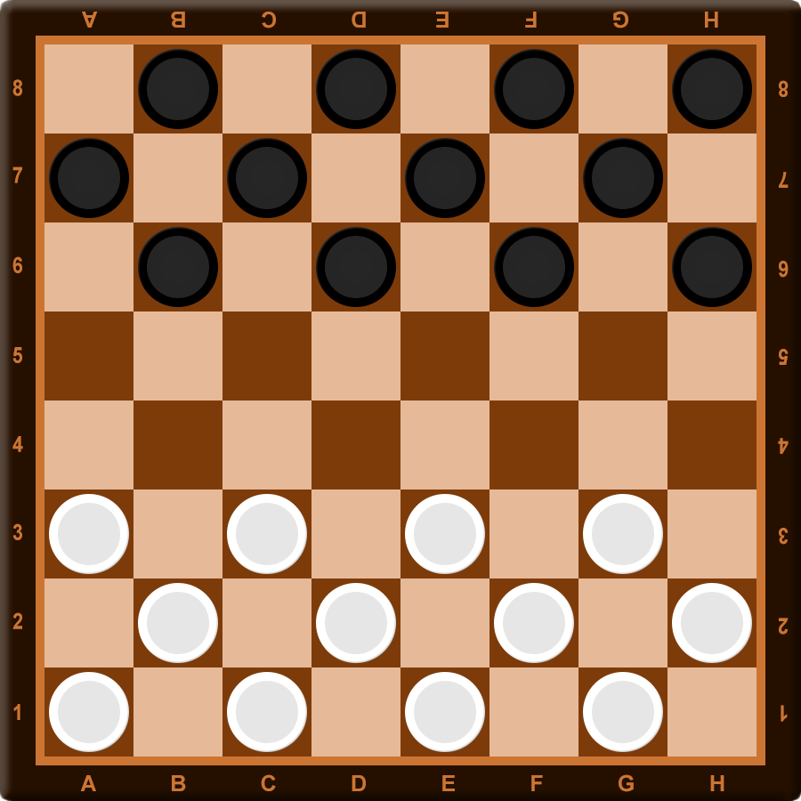
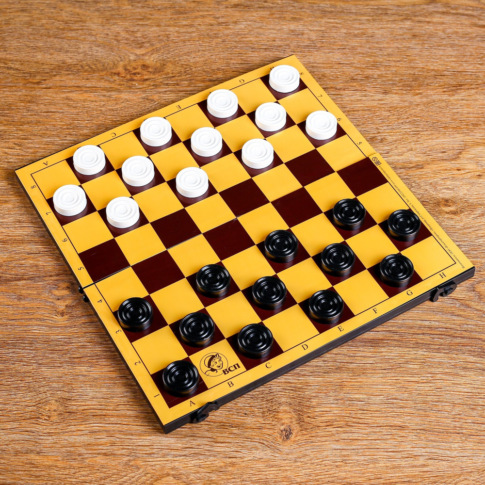
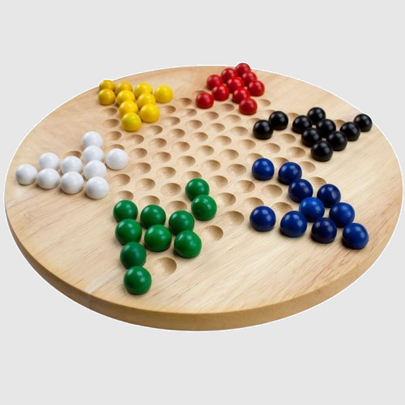
Правила русских шашек
1. Шашка может ходить по диагонали только на 1 клетку вперед.
2. Шашка может сбить шашку противника, если соседствует с ней, и поле за шашкой противника свободно. Можно бить назад.
После взятия шашка противника убирается с игрового поля, а шашка игрока перемещается на поле за шашкой противника.
3. В случае, если можно сбить шашку противника, игрок ОБЯЗАН сделать это. В случае,
если есть несколько вариантов того, как игрок может сбить шашку противника, он может выбрать любой из них.
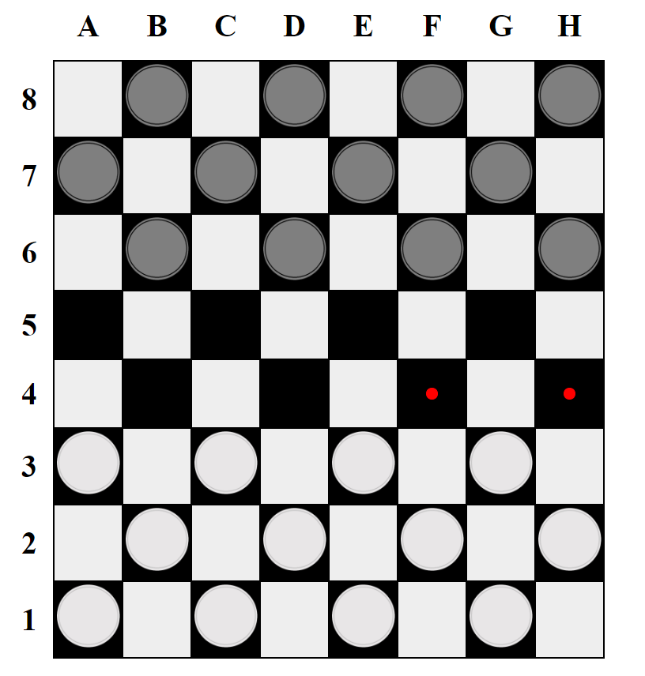
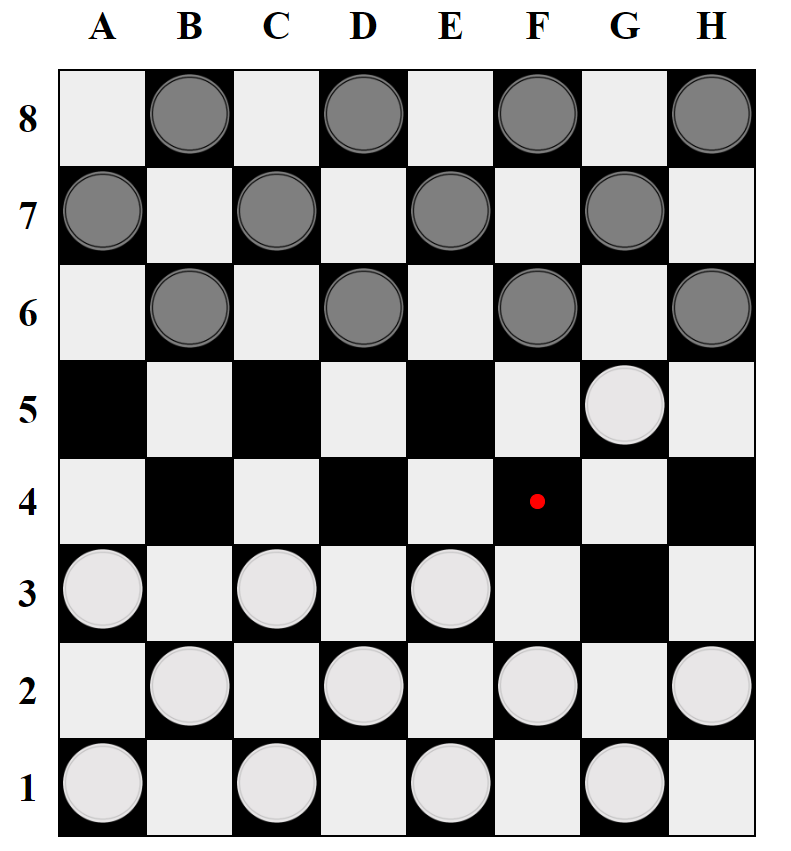
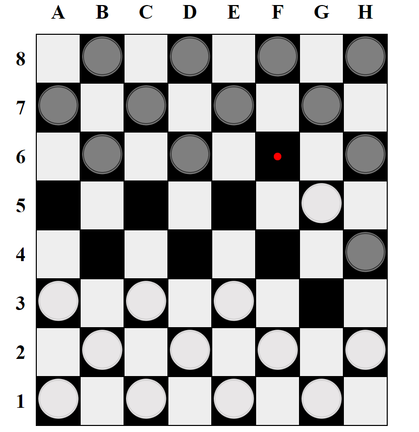
1. Необходимо сбивать несколько шашек противника за один ход, если после взятия шашки противника
шашка игрока может сбить иные шашки противника.
2. Если шашка доходит до противоположной по отношению к игроку линии, то становится дамкой.
3. Дамка может ходить в любых направлениях на неограниченное количество клеток.
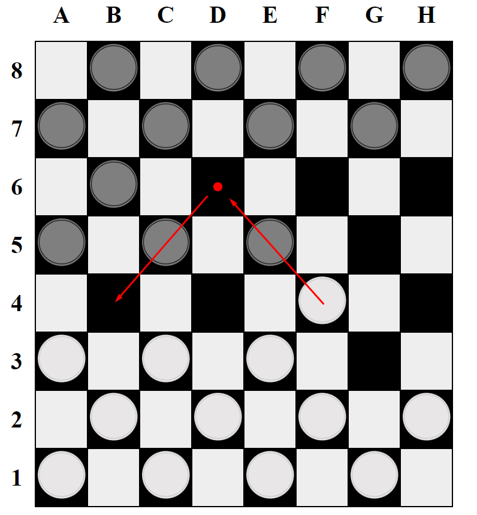
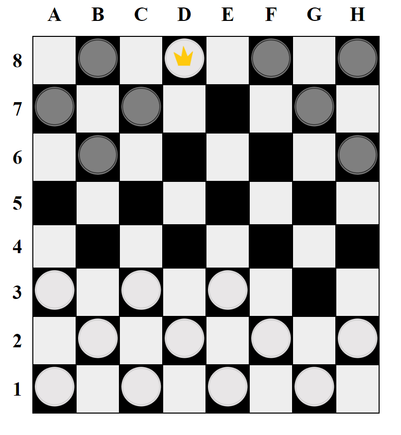
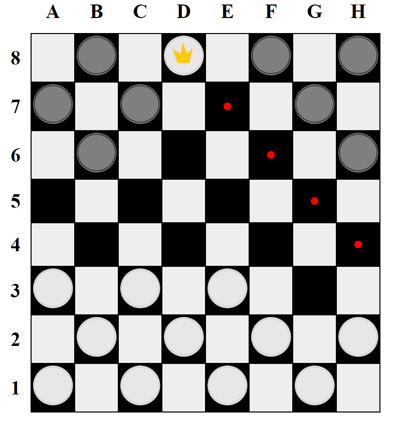
1. Дамка может сбить шашку противника через любое количество полей и "приземлиться" сколь угодно далеко.
2. Если в результате взятия шашки противника шашка игрока становится дамкой, то взятие продолжается в соответствии с тем, как ходит дамка.
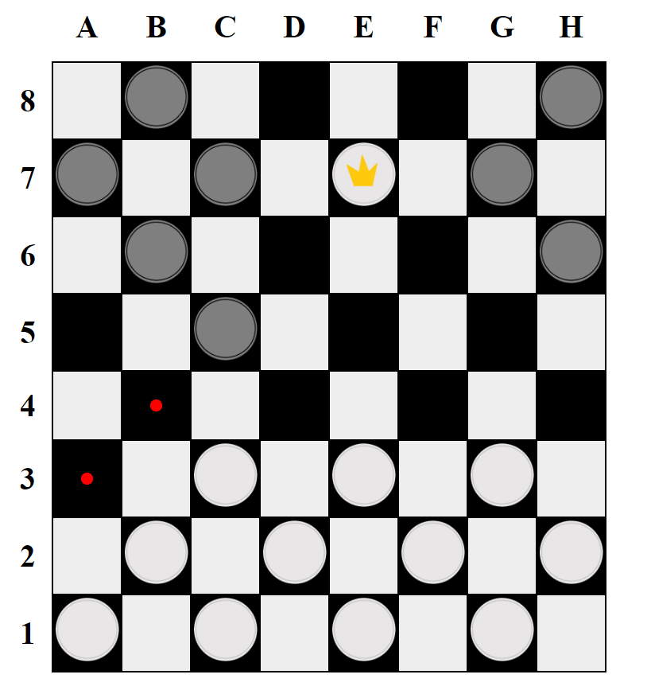
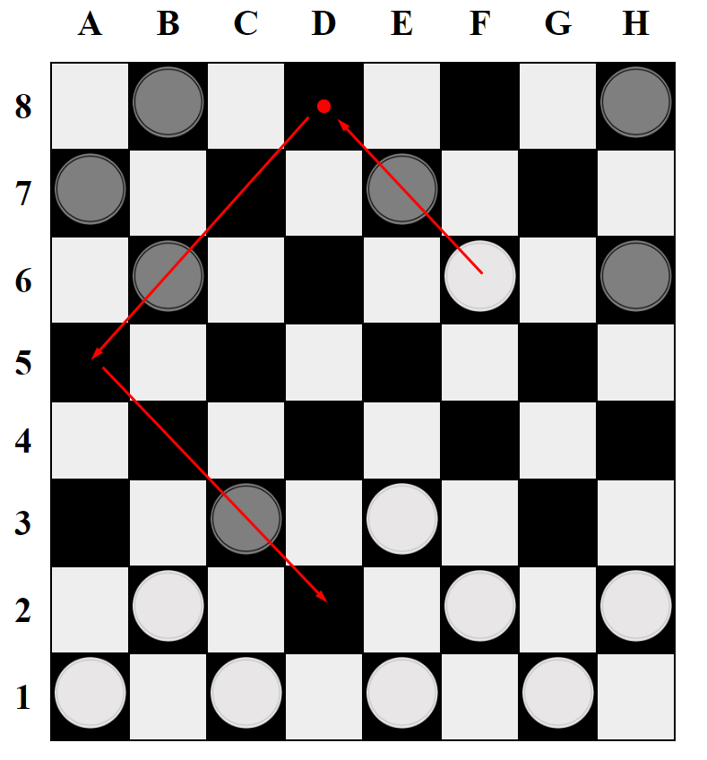
<%- include('common/footer.html') %>